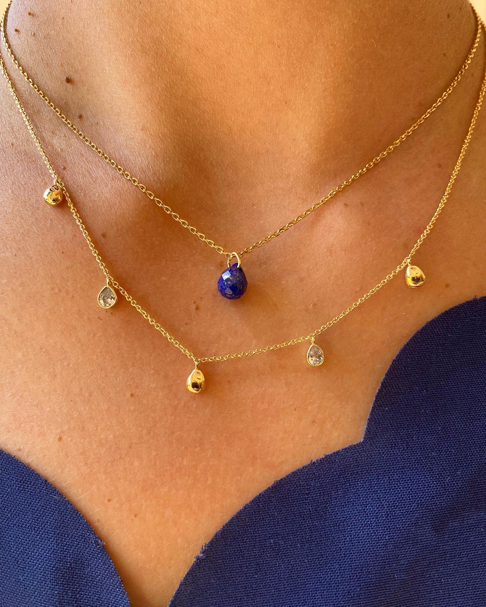

Notre blog
Une saison des tendances
Chaque saison apporte son lot de tendances en matière de bijoux artisanaux, et cette saison ne fait pas exception. Voici quelques-unes des tendances les plus en vogue que vous ne voudrez pas manquer :


Les pierres naturelles
Les pierres naturelles : Les pierres naturelles comme l'améthyste, la turquoise et la tourmaline sont très populaires cette saison. Optez pour des pièces avec des pierres brutes ou polies pour ajouter une touche organique à votre tenue.